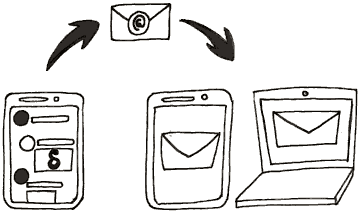

Delta Chat ist eine neue Chat-App, die mit Autocrypt verschlüsselte E-Mails versendet. Sie müssen sich nirgendwo anmelden, verwenden Sie einfach Ihr bestehendes E-Mail-Konto bei Delta Chat.

Mit Delta Chat können Sie an jede existierende E-Mail Adresse schreiben - selbst dann, wenn der Empfänger nicht Delta Chat verwendet. Im Gegensatz zu anderen Instant Messengern besteht für den Empfänger keine Notwendigkeit, dieselbe Anwendung zu installieren, die Sie auch verwenden.
Delta Chat zeigt automatisch:
Andere Nachrichten werden nicht automatisch angezeigt, diese sind im Hauptmenü unter Kontaktanfragen zu finden. Wenn gewünscht, kann ein neuer Chat von dort gestartet werden.
Sie können ein Profilbild in den Einstellungen hinzufügen. Wenn Sie Ihren Kontakten eine Nachricht senden oder sie über einen QR-Code hinzufügen, sehen diese automatisch Ihr Profilbild.
Kontakte die kein Delta Chat benutzen sehen es als E-Mail Anhang.
Aus Datenschutzgründen sieht niemand Ihr Profilbild bevor Sie ihnen eine Nachricht senden.
Ihr Profilbild wird nicht mit jeder Nachricht gesendet, aber häufig genug, dass Ihre Kontakte es erhalten werden, sogar wenn diese ein neues Gerät hinzufügen.
Genau wie auch bei anderen E-Mail Programmen wie Thunderbird, K9-Mail oder Outlook benötigt das Programm das Passwort, um E-Mails versenden zu können. Selbstverständlich wird das Passwort nur auf Ihrem Gerät gespeichert. Das Passwort wird nur an Ihren E-Mail Anbieter gesendet (wenn Sie sich einloggen), welcher ohnehin Zugriff auf Ihre Mails hat.
Wenn Sie einen E-Mail-Anbieter wie gmail.com oder yandex.ru mit Unterstützung für OAuth2 nutzen, dann wird Ihr Passwort nicht gespeichert. In diesem Fall wird nur ein Zugriffstoken genutzt.
Da Delta Chat Open Source ist, können Sie den Quellcode überprüfen, wenn Sie sich davon überzeugen möchten, dass Ihre Zugangsdaten sicher gehandhabt werden. Wir freuen uns über Feedback welches unsere App sicherer für all unsere Nutzer macht.
Eine verifizierte Gruppe ist ein Chat, welcher Sicherheit gegen einen aktiven Angreifer garantiert. Alle Nachrichten in einer verifizierten Gruppe sind Ende-zu-Ende verschlüsselt und Gruppenmitglieder können durch Scannen eines “QR-Einladungscodes” beitreten. Alle Gruppenmitglieder sind deshalb durch eine Kette von Einladungen miteinander verbunden, welche kryptografische Konsistenz gegen aktive Netzwerk- oder Anbieterangriffe garantiert. Siehe countermitm.readthedocs.io für die Forschung und Entwicklung hinter dieser Funktion.
Im Dezember 2019 bleibt eine “verifizierte Gruppe” eine experimentelle Funktion. Sie wird kontinuierlich verbessert und viele Fehler wurden seit der ursprünglichen Einführung in 2018 behoben. Allerdings gibt es immernoch Fälle, besonders in großen Gruppen, in denen es zu inkonsistenzen kommen kann oder Nachrichten unleserlich werden. Anfang 2020 wird es eine Sicherheitsüberprüfung geben und es finden einige neue Entwicklungen rund um QR-Beitrittsprotokolle statt. Die Chancen, dass wir das Etikett “Experimentell” in nicht all zu ferner Zukunft entfernen, stehen gut.
Löschen Sie sich entweder aus der Mitgliederliste oder löschen Sie den gesamten Chat. Wenn Sie der Gruppe später erneut beitreten möchten, bitten Sie ein anderes Gruppenmitglied, Sie erneut hinzuzufügen.
Alternativ können Sie eine Gruppe auch “Stummschalten” - dies bedeutet, dass Sie weiterhin alle Nachrichten erhalten und neue schreiben können, aber nicht mehr über neue Nachrichten informiert werden.
Nichts.
Delta Chat (und andere Autocrypt-kompatible E-Mail Anwendungen) tauschen die für eine Ende-zu-Ende-Verschlüsselung benötigten Schlüssel automatisch mit der ersten versendeten Nachricht aus. Danach werden alle folgenden Nachrichten automatisch Ende-zu-Ende verschlüsselt. Wenn einer der Chat-Partner eine E-Mail-Anwendung verwendet, die nicht Autocrypt-kompatibel ist, werden Nachrichten solange unverschlüsselt gesendet, bis wieder eine Autocrypt-kompatible Anwendung verfügbar ist.
Falls Sie die Ende-zu-Ende-Verschlüsselung abschalten möchten, deaktivieren Sie die entsprechende Einstellungen unter “Einstellungen / Erweitert”.
Das Benutzerprofil zeigt einige zusätzliche Informationen:
Sie können auf “QR Einladungscode” in Android tippen und dann auf einem anderen Gerät die Schaltfläche “QR-Code scannen” verwenden, um diesen Code zu scannen. Wenn beide Geräte online sind, werden sie (falls er noch nicht existiert) einen Chat-Kanal miteinander einrichten und auch die Schlüssel für die Verschlüsselung werden überprüft. Beide werden eine “Absender verifiziert” Systemnachricht in ihrem 1:1 Chat sehen.
Für die Ende-zu-Ende-Verschlüsselung zeigt Delta Chat dort zwei Fingerabdrücke an. Wenn auf dem Gerät Ihres Chatpartners dieselben Fingerabdrücke angezeigt werden, ist die Verbindung sicher.
Bei der Transportverschlüsselung wird dieser Zustand dort nur angezeigt.
Wenn neben einer Nachricht ein kleines Vorhängeschloss angezeigt wird, bedeutet dies, dass die Nachricht durchgehend Ende-zu-Ende verschlüsselt ist und vom angegebenen Absender gesendet wurde und dass Ihre Antwort ebenfalls durchgehend Ende-zu-Ende verschlüsselt wird.
Wenn kein Vorhängeschloss vorhanden ist, wird die Nachricht normalerweise unverschlüsselt transportiert, z.B. weil der Absender oder Sie die Ende-zu-Ende-Verschlüsselung deaktiviert haben oder der Absender eine Anwendung ohne Unterstützung für die Ende-zu-Ende-Verschlüsselung verwendet.
1:1 Chats mit einem verifizierten Kontakt und verifizierte Gruppen sind nicht das Gleiche, sogar wenn sich nur 2 Personen in einer verifizierten Gruppe befinden. Ein Unterschied ist, dass Sie einfach weitere Personen zu einer Gruppe hinzufügen können, aber es gibt noch weitere Unterschiede.
Verifizierte Gruppen sind immer geschützt. Jeder Bruch (Klartextnachrichten oder falsch signierte Nachrichten) wird erkannt und nicht in diesem Chat dargestellt. Sie können darauf vertrauen, dass alle Nachrichten in diesem verifizierten Chat nicht von Dritten verändert oder gelesen wurden.
1:1 Chats sind opportunistisch, damit die Nutzer immer miteinander kommunizieren können, egal ob sie E-Mail-Programme oder Geräte wechseln. Deshalb sehen Sie manchmal kein Verifikationshäkchen, sogar nicht, wenn Sie den Kontakt verifiziert haben.
Nein, OpenPGP unterstützt Perfect Forward Secrecy nicht. Perfect Forward Secrecy arbeitet Sitzungsorientiert, aber E-Mail ist von Natur aus asynchron und wird meist unabhängig von verschiedenen Geräten aus verwendet. Das bedeutet, dass wenn Ihr geheimer Schlüssel aus Delta Chat bekannt wird und jemand eine Aufzeichnung Ihrer versendeten und empfangenen verschlüsselten Nachrichten besitzt, dieser in der Lage ist die Nachrichten zu lesen.
Jemand der ihr Telefon beschlagnahmt oder hackt, kann typischerweise alle Nachrichten lesen - unabhängig davon ob Perfect Forward Secrecy verwendet wird oder nicht. Der Zugriff auf ein einzelnes Gerät eines Gruppenmitglieds verrät viel über den sozialen Graphen. Verwendet man E-Mail-Adressen, welche sich nicht einfach zu Personen zurückverfolgen lassen, hilft das Gruppenmitgliedern besser, sich vor der den Folgen der Beschlagnahmung eines Geräts zu schützen.
Wir zeichnen Wege auf, um Kommunikation besser vor dem Fall eines beschlagnahmten Geräts zu schützen.
Da Delta Chat ein dezentralisierter Messenger ist, werden Metadaten der Delta Chat Nutzer nicht auf einem zentralen Server gespeichert. Allerdings werden diese auf den Mailservern des Absenders und des Empfängers einer Nachricht gespeichert.
Jeder Mailserver kann derzeit durch inspizieren der unverschlüsselten An- und CC-Felder sehen, wer eine Nachricht an wen gesendet hat und welche E-Mail-Adressen teil einer Gruppe sind. Delta Chat selbst könnte unverschlüsselte An- und CC-Felder vollständig vermeiden und diese immer nur in den verschlüsselten Teil einer Nachricht schreiben. Lesen Sie dazu auch Avoid sending To/CC headers for verified groups. Die Hauptsorge bei opportunistischen Chats ist wie andere Mail Apps, welche an einem Chat teilnehmen könnten, damit umgehen.
Viele weitere E-Mail-Header, insbesondere der “Subject” Header, sind Ende-zu-Ende verschlüsselt. Lese dazu auch den kommenden IETF RFC.
Ja. Der beste Weg ist, von der anderen E-Mail-Anwendung aus eine Autocrypt Setup Nachricht zu versenden. Suchen Sie eine solche Option in den Einstellungen der anderen Anwendung z.B. unter “Autocrypt Setup Transfer starten” und folgen Sie den dort angezeigten Hinweisen.
Alternativ können Sie den Schlüssel manuell unter “Einstellungen / Erweitert / Schlüssel verwalten” importieren. Achtung: Der private Schlüssel darf nicht mit einem Passwort geschützt sein bzw. muss dieses zuvor entfernt werden.
Wenn Sie keinen Schlüssel besitzen oder nicht einmal wissen, dass Sie einen benötigen - keine Sorge: Delta Chat erstellt einen Schlüssel, wenn er benötigt wird.
Mit sehr großer Wahrscheinlichkeit besteht das Problem darin, dass Ihr Schlüssel verschlüsselt ist und/oder ein Passwort verwendet. Solche Schlüssel werden von Delta Chat nicht unterstützt. Bitte entfernen Sie die Verschlüsselung und das Passwort und versuchen Sie den Import danach erneut. Wenn Sie das Passwort nicht entfernen möchten, dann müssen Sie einen E-Mail-Alias zur Nutzung mit Delta Chat anlegen, sodass der Schlüssel von Delta Chat mit diesem E-Mail-Alias verknüpft ist.
Grundsätzlich sollte Delta Chat “gängige” private Schlüsselformate unterstützen, allerdings ist es unwahrscheinlich, dass wir 100% aller privaten Schlüssel aus sämtlichen Quellen unterstützen. Dies ist auch nicht das Hauptaugenmerk von Delta Chat (tatsächlich besitzt die große Mehrheit der Delta Chat Benutzer keinen Schlüssel, bevor sie Delta Chat verwenden). Wir versuchen jedoch, private Schlüssel aus anderen Quellen so gut wie möglich zu unterstützen.
Das Entfernen des Passworts vom privaten Schlüssel ist abhängig von der Software, mit der Sie Ihre PGP-Schlüssel verwalten. Bei Enigmail können Sie Ihr Passwort im Fenster Schlüsselverwaltung auf einen leeren Wert setzen. Bei GnuPG können Sie es über die Kommandozeile einstellen. Für andere Programme können Sie online eine Lösung finden.
Wenn Sie dasselbe Konto auf unterschiedlichen (Autocrypt-fähigen) Geräten verwenden möchten, muss die Verschlüsselungsfunktion synchronisiert werden:
Wählen Sie auf dem ersten Gerät “Weitere Einstellungen / Autocrypt-Setup-Nachricht versenden” und klicken Sie, bis ein “Setup-Code” angezeigt wird.
Warten Sie auf dem anderen Gerät, bis die “Autocrypt Setup Nachricht” ankommt und klicken Sie diese an. Eine Abfrage des Sicherheitscodes sollte nun erscheinen.
Die Synchronisation ist nun erfolgreich und Sie können beiden Geräte zum Senden und Empfangen von Ende-zu-Ende-verschlüsselten Nachrichten an Ihre Kommunikationspartner verwenden.
This is an experimental setting for some people who are experimenting with server-side rules. Not all providers support this, but with some you can move all mails with a “Chat-Version” header to the DeltaChat folder. Normally, this would be done by the Delta Chat app.
Watching the Inbox makes sense to turn off, if you have both:
In this case, Delta Chat doesn’t need to watch the Inbox.
Sending a copy of your messages to yourself ensures that you receive your own messages on all devices. If you have multiple devices and don’t turn it on, you see only the messages from other people, and the messages you send from the current device.
The copy is send to the Inbox, and then moved to the DeltaChat folder; it’s not put into the “Sent” folder. Delta Chat never uploads anything to the Sent folder because this would mean uploading a message twice (once through SMTP, and once through IMAP to Sent folder).
The default setting for copy-to-self is “no”.
The only reason one wants to watch the Sent folder is if you are using another mail program (like Thunderbird) next to your Delta Chat app, and want your MUA to participate in chat conversations.
However, we recommend to use the Delta Chat Desktop Client; you can download it on get.delta.chat. The option to watch the “Sent” folder might go away in the future. It was introduced at a time where there was no Delta Chat Desktop client available on all platforms.
Some people use Delta Chat as a regular email client, and want to use the Inbox folder for their mail, instead of the DeltaChat folder. If you disable “Watch DeltaChat folder”, you should also disable “move chat messages to DeltaChat”. Otherwise, deleting messages or multi-device setups might not work properly.